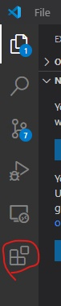

Preliminaries
Before we get started with even setting up the VS Code debugger, I would like to go over a few things. Most of you likely already know about the things below if you have been able to open this workbook with VS Code Live Server, so this should be a quick skim for many. But if you haven't been using it, you will have to in order to continue this workbook.
VS Code
Make sure you are using VS Code. After all, I will be going over how to use the VS Code Debugger.
Workspace
The workspace is where all your flies you've opened is displayed.
When you open up VS Code, there is a tab on the right. The top icon is the 'explorer' and it is where you can view the files in your workspace as well as other things. If you don't have any folders open, then it will look like this below.

If you haven't already, add this workbook's folder.
You can have multiple folders added to a workspace and save the workspace, though that won't be important for the debugging in this workbook. All that matters for now is that this workbook is in the workspace.
Live Server
Live Server is an easy and convenient way to run the server. The set up for the VS Code debugger will be using this. If you aren't already using this, below is a short guide on how to get Live Server set up.
First, go to 'Extensions' at the bottom of the left tab.
Then search up 'Live Server' and install.

There should now be a 'Go Live' button on the right side of the bottom blue bar.

To run 'Live Server', simply click on 'Go Live' and it will open up this workbook as a site. In place of the 'Go Live' button, it should display what port it is using to open server.
Note: if you have multiple folders open in a workspace, you may want to instead right click on the html file you want to open and click 'Open with Live Server' to avoid opening the wrong folder.
Another thing: You have to click on the button again to close down the server. If you just close out the window in the browser, the server will still run.

General File Structure
All the files that you will need to look at for the exercises later in this tutorial
can be found in the for_students folder in this workbook.

Each .js file has two numbers, the first means which page it is on, and the second
meaning which excercise on that page. There is only one exercise per page, so the second number is always 1.
If this page had an exercise, it would be 0-1.js.